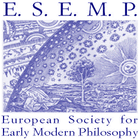

International Workshop
Theorizing Gender Inequality: Renaissance and Early Modern Perspectives
May 21 and 22, 2026
Aula Mario Baratto, Ca' Foscari University of Venice
International Workshop
May 21 and 22, 2026
Aula Mario Baratto, Ca' Foscari University of Venice
This workshop aims to explore Renaissance and early modern accounts of the genesis of gender inequality. Contributions are welcome that examine how feminist writings explained the emergence of gender-based injustice and patriarchal oppression against women and other non-hegemonic genders.
The workshop also invites reflection on canonical political philosophers such as Hobbes, Locke, Montesquieu, Rousseau, and others, whose theories of natural rights and the social contract implicitly addressed, redefined, and, in some cases legitimized a gendered (unequal) distribution of power.
Cet atelier vise à explorer les récits de la Renaissance et de la première modernité sur la genèse des inégalités entre les genres. Nous invitons les contributions qui examinent comment les écrits féministes ont expliqué l’émergence de l’injustice fondée sur le genre.
L’atelier invite également à réfléchir sur les philosophes politiques canoniques tels que Hobbes, Locke, Montesquieu, Rousseau et d’autres, dont les théories des droits naturels et du contrat social ont implicitement abordé la répartition genrée du pouvoir.
Welcome and Introduction
Keynote Talk: Nature and Custom as Sources of the Subjection of Women
Coffee break
Marie de Gournay on the Origins of Gender Inequality
TBD
Lunch
The ‘pleas of equity’ and ‘the moral fitness of things’ in Catharine Macaulay's A Modest Plea for the Property of Copy Right (1774)
Macaulay, Feminism, and Sympathy
Coffee break
«Männer und Weiber dürfen nicht gleich sein». Sophie Mereau on Gender Difference
L'inégalité des sexes dans les littératures d'éducation au 18e siècle. Marie Leprince de Beaumont et Stéphanie Félicité de Genlis
Louise Dupin et le regard des anatomistes : la fabrique des inégalités physiques entre les sexes
De la généalogie de l'inégalité des sexes au projet de réforme de la société : la pensée de Louise Dupin (1706-1799)
Coffee break
Social Contract and Social Reproduction: Gendering Labor in Early Modern Political Theory
The historical-conjectural device in early modern feminist theory
Concluding Remarks
This workshop is organized by research project - HORIZON-MSCA-2022-PF-01 “GYNODICY: Gender-Egalitarian Fictions of Origin in European Philosophical Culture (1673-1751)” (PI Natalia Zorrilla Sirlin, GA n. 101106239), with financial support from Horizon Europe, as well as the British Society for the History of Philosophy and the European Society of Early Modern Philosophy.
